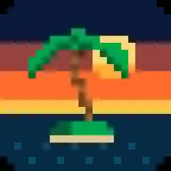
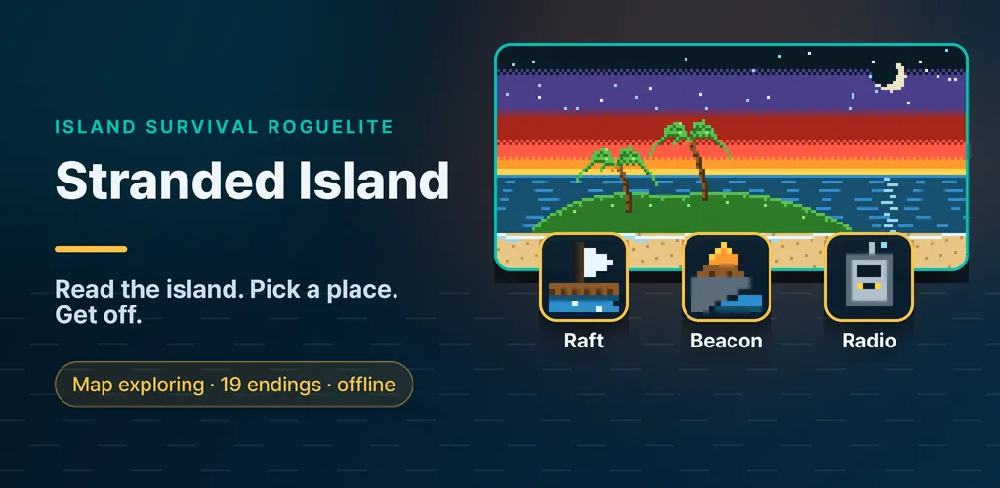
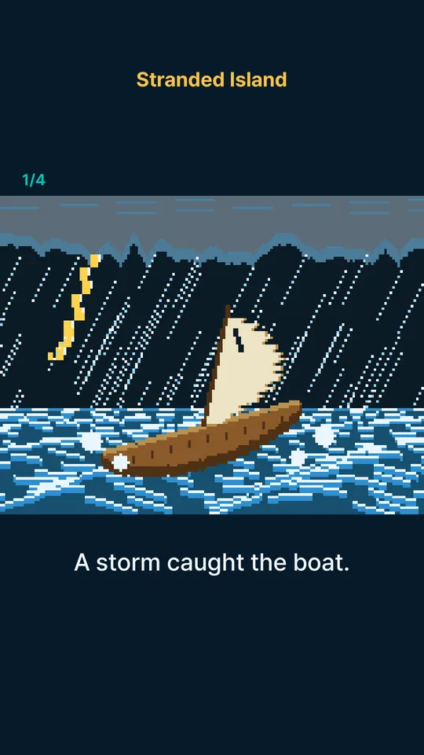
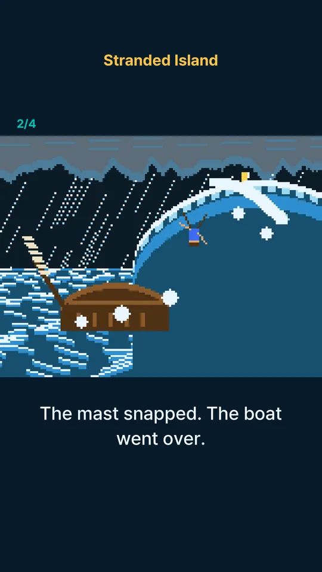
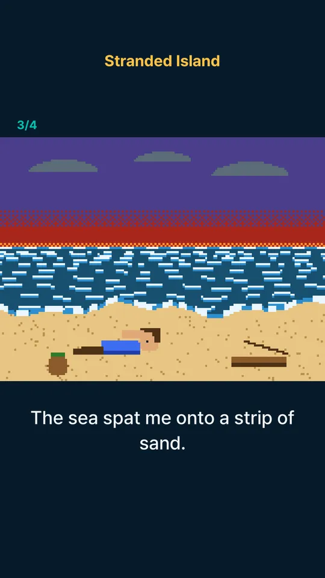
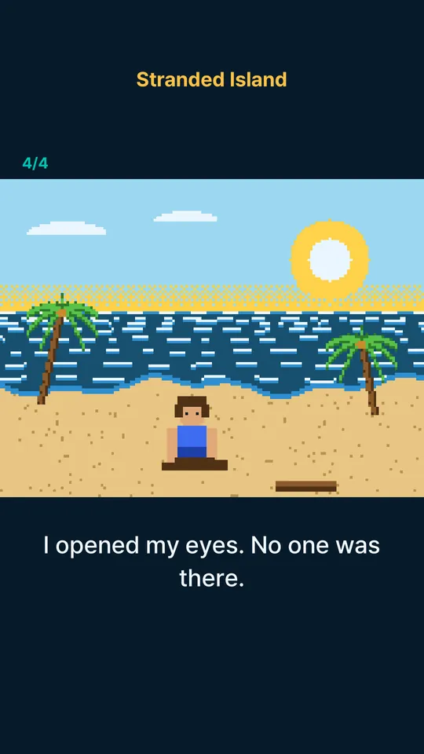
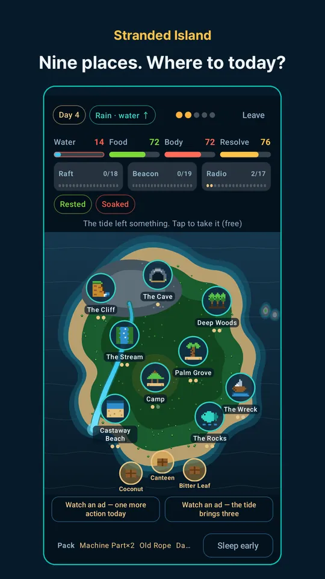
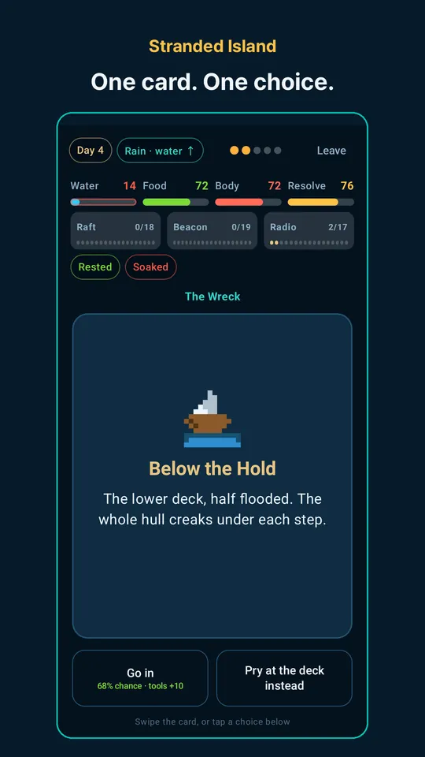

Stranded Island: Survival Game
Explore an island map, scavenge to survive, and escape by raft, fire or radio







About this app
A storm flipped your boat. You wake on an empty beach with nothing but Coco, a coconut with a face drawn on it.
Water is running low, the sun is going down, and the horizon is empty.
You can move four times today. Where you go is up to you.
Stranded Island is a 2D survival game where you tap your way around an island map, get through one day at a time, and finally find a way off.
Explore a hand-drawn island map
Start at the beach, palm grove, stream, tide rocks and camp, and open up the shipwreck, deep forest, cliff and cave as you go. Nine places in all.
Every place yields something different, and each one runs dry after two visits a day. Fetch water or dig for escape parts? Your route for the day is your strategy.
Driftwood and flotsam that wash up overnight cost no actions. Just tap to pick them up.
Situation cards where every choice matters
Tap a place and its situation appears as a card. Catch the rain, or follow that strange smoke?
Riskier choices pay more, and the odds are printed right on the button. Tools raise your chances, but a gamble is always a gamble.
Three ways to escape
Launch a raft from the beach, light a signal fire on the cliff, or send a radio call from camp. Each route asks for a different path around the island.
Complete all three in a single run and a hidden ending awaits.
Progress that survives you
Every time you leave the island alive, you level up and flip one of 12 face-down reward cards.
Falling is never wasted either. Each new way to perish carves a Memory that makes the next castaway stronger (8 in all).
19 endings to collect
Rescues, final moments and hidden stories make up 19 endings, plus 33 finds and tools for your journal.
The opening and each escape play out as hand-made pixel-art comics.
Light and easy to pick up
A run takes 10 to 20 minutes, and closing the app never loses your run. Plays fully offline, with no in-app purchases.
Available in 17 languages.
Please note
Everything on this island, including places, people, plants and events, is fiction and not real survival guidance. Do not try any of it in real life.
About ads. Banner ads on menu screens, one full-screen ad when you tap Get stranded on the home screen (at most once every 5 minutes), and rewarded videos only when you choose to watch one (rewind, +1 action, or extra flotsam). There are no ads on the card screens during play.
Contact: thefacegood1@gmail.com
Android · free with ads · Developer: RealTunaLove · Store listing in 17 languages
Background story: why I built it